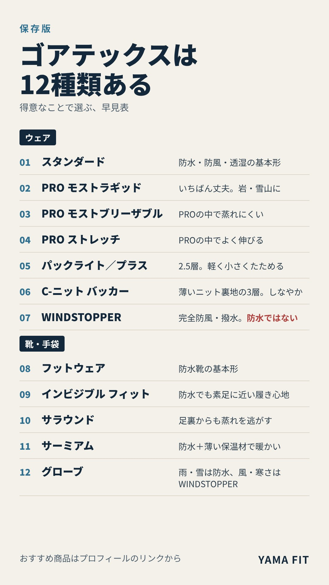

雨具や登山靴を選んでいると「ゴアテックス」という言葉をよく見かけます。けれど同じゴアテックスでも、丈夫さを優先したもの、軽さを優先したもの、風は防ぐけれど防水ではないものなど、一般向けだけで12種類あり、得意なことがまったく違います。この記事では、12種類の違いを早見表にまとめ、行く山に合わせた選び方と、当サイトで扱っている商品を紹介します。冬の雨・雪対策の雨具選びにも使ってください。
12種類の早見表
名前を押すと、その種類の説明と商品へ移動します。
| 種類 | ひとことで | 向いている場面 |
|---|---|---|
| ① スタンダード | 防水・防風・透湿の基本形。2層と3層がある | 低山〜高山、キャンプ、街 |
| ② PRO モスト ラギッド | いちばん丈夫。裏地も織物 | 岩場・雪山、使う頻度が高い人 |
| ③ PRO モスト ブリーザブル | PROの中で蒸れにくさを重視 | 汗をかく登り、山スキー |
| ④ PRO ストレッチ | PROの中でよく伸びる | クライミングなど動きの大きい場面 |
| ⑤ パックライト／パックライト プラス | 2.5層で軽く、小さくたためる | 日帰り登山、旅行、いつも持ち歩く雨具 |
| ⑥ C-ニット バッカー | 裏地がごく薄いニットの3層。しなやかで軽い | 縦走・テント泊の雨具 |
| ⑦ WINDSTOPPER | 完全防風・透湿・撥水。防水ではない | 風の強い稜線、寒い日の行動着 |
| ⑧ フットウェア | 防水の登山靴・スニーカーの基本形 | 雨の山道、通勤 |
| ⑨ インビジブル フィット | 防水でも素足に近い履き心地 | 防水靴のゴワつきが苦手な人 |
| ⑩ サラウンド | 足裏からも蒸れを逃がす | 夏の低山、汗をかきやすい人 |
| ⑪ サーミアム | 防水＋薄い保温材で暖かい | 冬の低山、雪道 |
| ⑫ グローブ | 雨・雪は防水、風・寒さはWINDSTOPPER | 雪山、冬の登山 |
迷ったら、この3つから選ぶ
- 日帰りの登山が中心なら：パックライト（軽く、小さくたたんでザックに入れておける）
- 縦走やテント泊で雨具を長く着るなら：C-ニット バッカー（3層でしなやか、着心地がよい）
- 雪山や岩場、使う頻度が高いなら：PRO（丈夫さを優先した種類）
ここに当てはまらないときは、まず①スタンダードを基準に考えると選びやすくなります。
① スタンダード：防水・防風・透湿の基本形
いちばん多くの雨具に使われている基本の種類です。雨を通さず、風を防ぎ、内側の汗の湿気を外へ逃がします。生地の重ね方には、裏地を別に付ける2層と、膜と表地・裏地を一体にした3層があります。
低山から高山、キャンプ、街まで幅広く使えるので、はじめての雨具ならまずここから考えると分かりやすい種類です。黒いひし形のタグ（「GUARANTEED TO KEEP YOU DRY」）が目印です。
②〜④ PRO：岩・雪山向けの3種類
PROは、厳しい環境での使用を想定した種類で、さらに3つに分かれます。いちばん丈夫な「モスト ラギッド」は、裏地にも織物を使い、岩や雪での擦れに強いのが特徴です。
「モスト ブリーザブル」はPROの中で蒸れにくさを重視したもので、汗をかく登りや山スキーに向きます。「ストレッチ」はPROの中でよく伸び、クライミングなど動きの大きい場面に向いています。
どのPROかは、商品説明に書かれていることが多いので、購入前に確認してください。下の商品はいずれも、公式にGORE-TEX PROと記載されているジャケットです。
⑤ パックライト／パックライト プラス：軽く、小さくたためる
一般に2.5層と呼ばれる、軽さと収納のしやすさを優先した種類です。小さくたたんでザックのポケットに入れておけるので、日帰り登山や旅行など「降るかもしれない日に持ち歩く雨具」に向いています。
パックライト プラスは、裏側の肌触りがさらっとしていて、汗をかいた腕でも脱ぎ着しやすくした種類です。
⑥ C-ニット バッカー：しなやかな3層
裏地にごく薄いニットを使った3層の種類です。3層の丈夫さを保ちながら、しなやかで軽く、着心地がよいのが特徴です。
雨の中を長く歩く縦走や、テント泊で雨具を着ている時間が長い人に向いています。商品説明に「C-KNIT」と書かれているのが目印です。
⑦ WINDSTOPPER：風は完全に防ぐが、防水ではない
風を完全に防ぎ、汗の湿気をよく逃がし、表面は水をはじく（撥水）種類です。ただし防水ではないため、雨具の代わりにはなりません。風の強い稜線や、寒い日の行動着、防寒着の表地などに使われています。
正式な名前は「WINDSTOPPER by GORE-TEX LABS」で、以前は「GORE-TEX INFINIUM」と呼ばれていました。白いひし形のタグが目印です。下の商品のように、中わた入りの防寒着の表地にも使われています。
⑧ フットウェア：防水の登山靴の基本形
登山靴やスニーカーに使われる基本の種類です。雨の山道やぬかるみ、朝露の多い道で、靴の中が濡れにくくなります。登山靴で「ゴアテックス」と書かれているものの多くは、この種類です。
防水の靴は通気が弱く、夏は蒸れやすいことがあります。季節と行く山に合わせて選んでください。
⑨〜⑫ 靴と手袋のそのほかの種類
- ⑨ インビジブル フィット：防水の膜を靴の生地と一体にして、防水靴でも素足に近い履き心地にした種類です。防水靴のゴワつきが苦手な人に向いています。
- ⑩ サラウンド：足の甲だけでなく足裏からも蒸れを逃がす種類です。夏の低山や、汗をかきやすい人に向いています。
- ⑪ サーミアム：防水に薄い保温材を組み合わせた種類です。冬の低山や雪道で、足元を暖かく保ちます。
- ⑫ グローブ：雨や雪には防水のゴアテックス、風と寒さにはWINDSTOPPERの手袋が使われています。
当サイトでは、⑨〜⑫の種類の商品はまだ扱っていません。取り扱いを始めたら、ここに追加します。
新しい膜「ePE」について
最近の新作には「ePE」と書かれたゴアテックスが増えています。これは12種類のどれかではなく、膜の素材が新しくなったものです。PFAS（有機フッ素化合物）を使わない次世代の膜で、「新作か旧作か」の見分けにも使えます。
なお、膜そのものが表面になったとても軽い「SHAKEDRY」は生産終了となっています。見かけた場合は在庫限りの商品です。
まとめ
ゴアテックスは、一般向けだけでウェア7・靴4・手袋1の12種類があります。迷ったら、日帰りはパックライト、縦走・テント泊はC-ニット バッカー、雪山・岩場はPROを基準に選んでください。WINDSTOPPERは風に強い一方で防水ではないので、雨具とは分けて考えるのがポイントです。
冬の雨や雪の日は、雨具と防寒着の組み合わせが大切です。行く山と季節に合わせて、最新の天気とルートの状況も確認してから出かけましょう。
この記事で紹介した商品
価格・重量・在庫は各ブランド公式サイトの記載（確認日つき）にもとづきます。商品を押すと、購入先を選べます。
この記事にはアフィリエイト広告が含まれます。リンク先での購入により、当サイトが報酬を受け取る場合があります。山行の前には、最新の気象とルートの状況を必ずご確認ください。